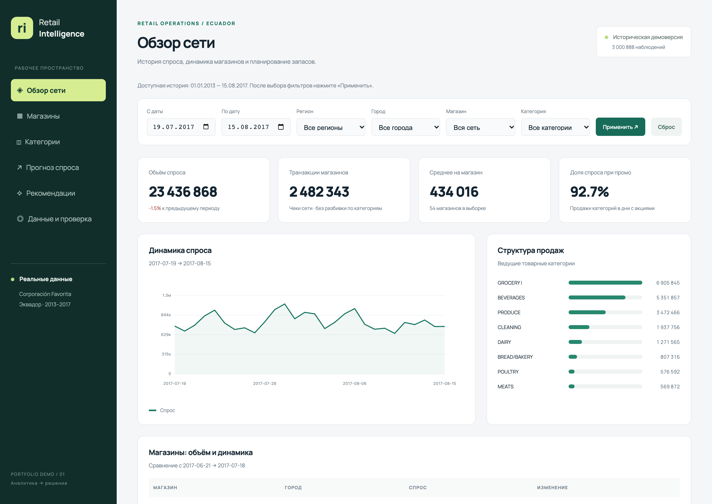
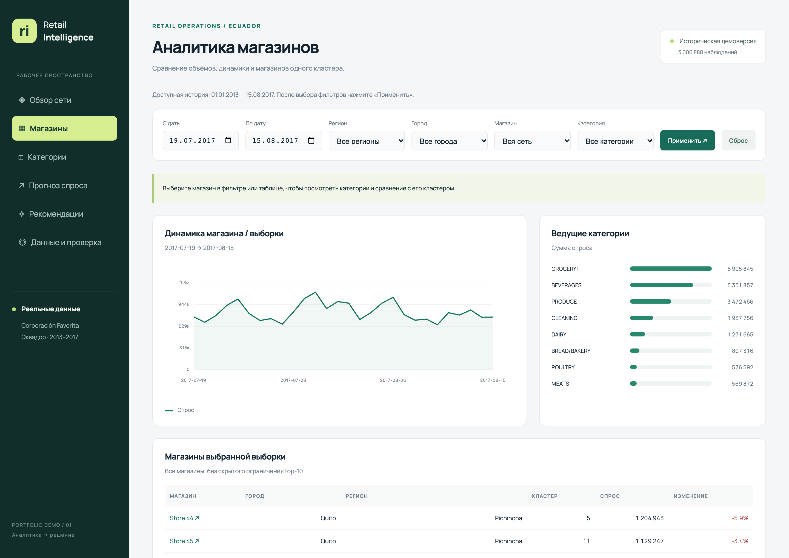
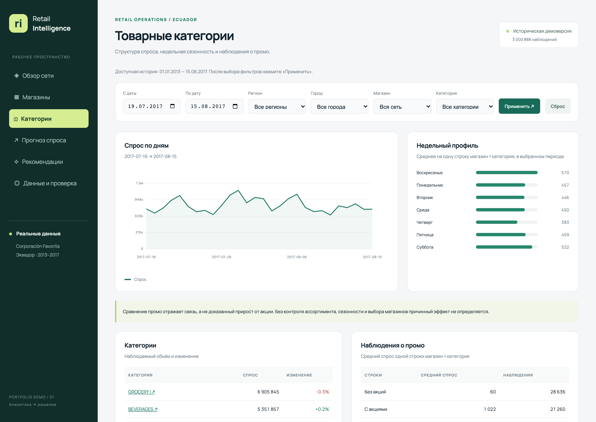
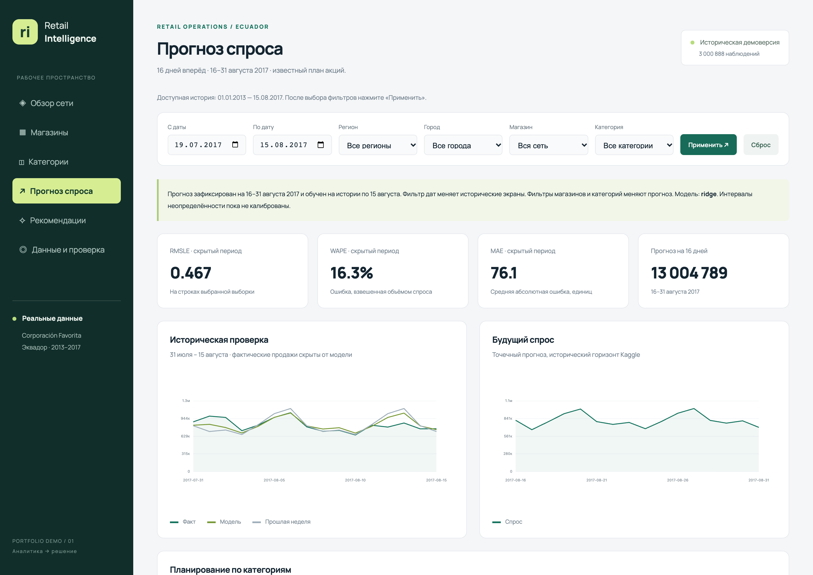

RETAIL INTELLIGENCE / АНАЛИТИКА РОЗНИЧНЫХ ПРОДАЖ
Аналитика продаж и прогноз спроса
Готовая демоверсия · Реальные исторические данные

01 / ЗАДАЧА
Понимать спрос и планировать продажи
В большой торговой сети общие показатели скрывают различия между магазинами и товарными категориями. Для анализа требовалось объединить данные, выделить сезонные закономерности и сравнить динамику продаж в разных городах и магазинах.
Отдельная задача — построить прогноз спроса и проверить, насколько он полезнее простых расчётов по прошлым продажам. Результаты должны быть доступны в понятном интерфейсе без ручной обработки многомиллионной таблицы.
02 / РЕШЕНИЕ
Что делает приложение
От общей картины к отдельным категориям


03 / ИНЖЕНЕРИЯ
Ключевые решения при разработке
04 / РЕЗУЛЬТАТ
Проверенный прогноз и единая картина продаж
Вместо разрозненных таблиц — приложение для анализа сети, магазинов и товарных категорий. Исторические данные, графики и результаты прогнозирования доступны в одном рабочем процессе.
На итоговом проверочном периоде ошибка Ridge по метрике RMSLE составила 0,467 против 0,531 у сезонного среднего — на 12,1% ниже. Это измеренный результат на выбранном историческом периоде.
Подготовлен экспорт прогноза для 1 782 сочетаний «магазин × категория». Для просмотра аналитики и готового прогноза внешние API не требуются.

Проверка работоспособности
34 автоматических теста проверяют данные, расчёты, API, прогноз и обработку некорректного ввода. Дополнительно пройдены 14 браузерных сценариев: разделы аналитики, фильтры, скачивание, сброс и мобильный экран.
На странице представлены реальные экраны работающего приложения. Прогноз построен на исторических данных; подключение к кассам или ERP действующей сети в этот проект не входит.
05 / ТЕХНОЛОГИИ